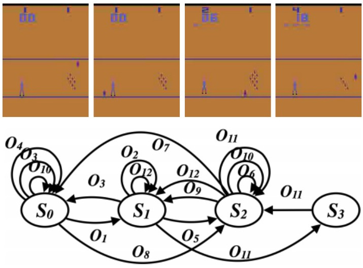
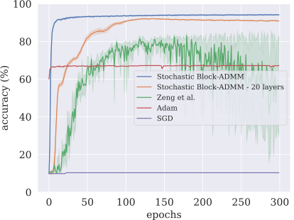
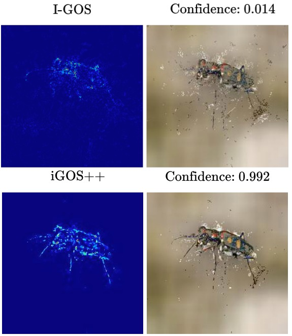
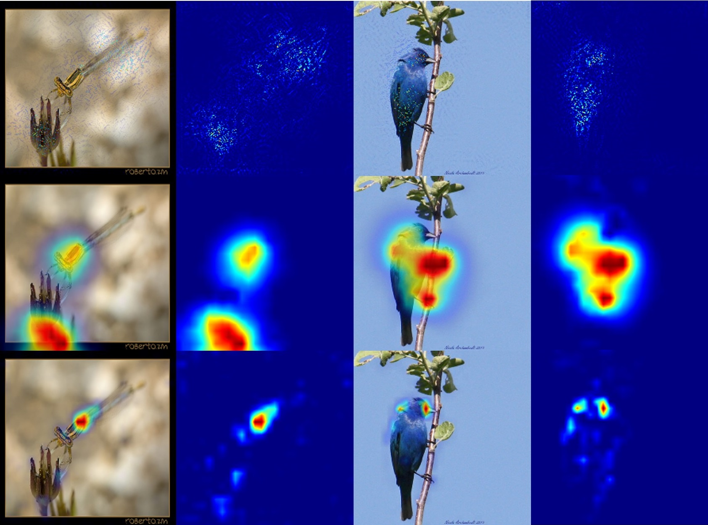
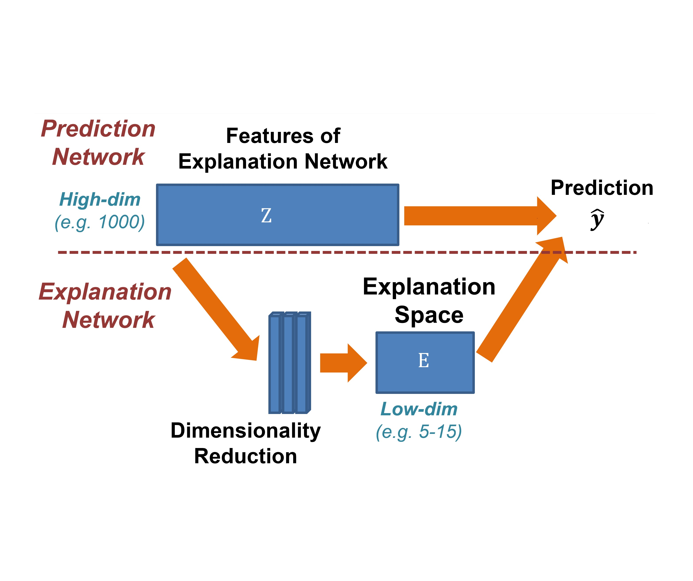

Hi, I am a Ph.D. candidate of Computer Science at the School of Electrical Engineering and Computer Science, Oregon State University. I am advised by Prof. Fuxin Li. My research interests mainly lie in the area of Computer vision, Interpretable AI models, Optimization, and Reinforcement Learning.
Before attending Oregon State, I was an undergraduate student at Amirkabir University of Technology. I was a member of Multimedia Signal Processing Research Lab (MSPRL) under supervision of Prof. Hamid Sheikhzadeh.
Before attending Oregon State, I was an undergraduate student at Amirkabir University of Technology. I was a member of Multimedia Signal Processing Research Lab (MSPRL) under supervision of Prof. Hamid Sheikhzadeh.
News
- May 21: Our paper "Re-Understanding Finite-State Representations of Recurrent Policy Networks" is accpeted to the ICML 21! (acceptance rate 21.4%) [PDF]
- May 21: Our new paper on flexible training of deep networks using ADMM titled "Stochastic Block-ADMM for Training Deep Networks " is now available on arXiv. [PDF]
- Feb 21: Code for iGOS++ is released! This repo also includes faster version of I-GOS! [Github]
- Feb 21: Our paper "iGOS++: integrated gradient optimized saliency by bilateral perturbations" is accepted to the ACM-CHIL 21! iGOS++ shows significant imporvement over I-GOS, particularly in terms of insertion score! (acceptnace rate ~27%) [PDF]
- Jan 21: I joined Scale AI as a Machine Learning Research Engineer Intern starting January 2021.
- Nov 20: Our paper "Embedding Deep Networks into Visual Explanations" is accepted to the Artificial Intelligence Journal! [Journal]
- Jul 20: Full-length paper for "Understanding Finite-State Representations of Recurrent Policy Networks" is now available at arXiv! [PDF]
- Jul 20: Our paper "Understanding Finite-State Representations of Recurrent Policy Networks" is accpeted to the ICML 20 XXAI workshop!
- Jun 20: My M.Sc. dissertation "Toward Disentangling the Activations of the Deep Networks via Low-dimensional Embedding and Non-negative Factorization" is now publicly available! [PDF]
- Apr 20: Demo for I-GOS is updated! It now supports user-input images, comparison against GradCam, and interactive deletion/insertion games! Go check it out! [Demo v2.0]
- Mar 20: I successfully passed my Ph.D. qualifying exam and defended my M.Sc. in Computer Science at Oregon State University! Yay! [Event]
- Feb 20: Medium post for I-GOS is now available! [Medium]
- Nov 19: Our paper "Visualizing Deep Networks by Optimizing with Integrated Gradients" is accepted to the AAAI 20. (acceptance rate 20.6%) [PDF]
- Aug 19: Code for I-GOS is now available! It is easy to use, go check it out! [Github]
- Jul 19: Early-version demo for I-GOS is no available! It does not yet support user-input images due to GPU constraints. Tune in for updtaes when more resources is available! [Demo]
- Jun 19: I-GOS is accepted to the CVPR 19 Explainable AI workshop. [PDF]
Publications
-
Mehran Soltani, Mohammad Hasan Shammakhi, Saeed Khorram, and Hamid Sheikhzadeh. ”Combined mRMR filter and sparse Bayesian classifier for analysis of gene expression data.”, International Conference of Signal Processing and Intelligent Systems (ICSPIS), IEEE, 2016. [PDF]
-
Mohamadreza Jafaryani, Saeed Khorram, Vahid Pourahmadi, and Minoo Shahbazi. “Sleep Stage Scoring Using Joint Frequency-Temporal and Unsupervised Features,”, International Conference on New Research Achievements in Electrical and Computer Engineering (ICNRAECE), IEEE, 2016. [PDF]
Re-Understanding Finite-State Representations of Recurrent Policy Networks (ICMLW 20 + ICML 21)
Mohamad H. Danesh, Anurag Koul, Alan Fern, Saeed Khorram
[PDF]

We introduce an approach for understanding control policies represented as recurrent neural networks. Recent work has approached this problem by transforming such recurrent policy networks into finite-state machines (FSM) and then analyzing the equivalent minimized FSM. While this led to interesting insights, the minimization process can obscure a deeper understanding of a machine’s operation by merging states that are semantically distinct. To address this issue, we introduce an analysis approach that starts with an unminimized FSM and applies more-interpretable reductions that preserve the key decision points of the policy. We also contribute an attention tool to attain a deeper understanding of the role of observations in the decisions. Our case studies on 7 Atari games and 3 control benchmarks demonstrate that the approach can reveal insights that have not been previously noticed.
Stochastic Block-ADMM for Training Deep Networks (pre-print)
Saeed Khorram, Xiao Fu, Mohammad H. Danesh, Zhongang Qi, Li Fuxin
[PDF]

In this paper, we propose Stochastic Block-ADMM as an approach to train deep neural networks in batch and online settings. Our method works by splitting neural networks into an arbitrary number of blocks and utilizes auxiliary variables to connect these blocks while optimizing with stochastic gradient descent. This allows training deep networks with non-differentiable constraints where conventional backpropagation is not applicable. An application of this is supervised feature disentangling, where our proposed DeepFacto inserts a non-negative matrix factorization (NMF) layer into the network. Since backpropagation only needs to be performed within each block, our approach alleviates vanishing gradients and provides potentials for parallelization. We prove the convergence of our proposed method and justify its capabilities through experiments in supervised and weakly-supervised settings.
iGOS++: Integrated Gradient Optimized Saliency by Bilateral Perturbations (ACM-CHIL 21)
Saeed Khorram, Tyler Lawson, Li Fuxin
[PDF] [Code] [Poster] [Presentation]

The black-box nature of the deep networks makes the explanation for "why" they make certain predictions extremely challenging. Saliency maps are one of the most widely-used local explanation tools to alleviate this problem. One of the primary approaches for generating saliency maps is by optimizing a mask over the input dimensions so that the output of the network is influenced the most by the masking. However, prior work only studies such influence by removing evidence from the input. In this paper, we present iGOS++, a framework to generate saliency maps that are optimized for altering the output of the black-box system by either removing or preserving only a small fraction of the input. Additionally, we propose to add a bilateral total variation term to the optimization that improves the continuity of the saliency map especially under high resolution and with thin object parts. The evaluation results from comparing iGOS++ against state-of-the-art saliency map methods show significant improvement in locating salient regions that are directly interpretable by humans. We utilized iGOS++ in the task of classifying COVID-19 cases from x-ray images and discovered that sometimes the CNN network is overfitted to the characters printed on the x-ray images when performing classification. Fixing this issue by data cleansing significantly improved the precision and recall of the classifier.
Visualizing Deep Networks by Optimizing with Integrated Gradients (CVPRW 19, AAAI 20)
Zhongang Qi, Saeed Khorram, Li Fuxin
[PDF] [Demo] [Code] [Medium]

Understanding and interpreting the decisions made by deep learning models is valuable in many domains. In computer vision, computing heatmaps from a deep network is a popular approach for visualizing and understanding deep networks. However, heatmaps that do not correlate with the network may mislead human, hence the performance of heatmaps in providing a faithful explanation to the underlying deep network is crucial. In this paper, we propose I-GOS, which optimizes for a heatmap so that the classification scores on the masked image would maximally decrease. The main novelty of the approach is to compute descent directions based on the integrated gradients instead of the normal gradient, which avoids local optima and speeds up convergence. Compared with previous approaches, our method can flexibly compute heatmaps at any resolution for different user needs. Extensive experiments on several benchmark datasets show that the heatmaps produced by our approach are more correlated with the decision of the underlying deep network, in comparison with other stateof-the-art approaches.
Embedding Deep Networks into Visual Explanations (Artificial Intelligence Journal 2020)
Zhongang Qi, Saeed Khorram, Li Fuxin
[PDF] [Code]
